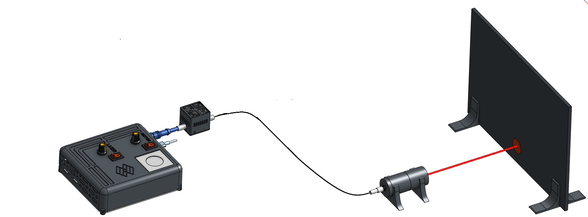

The modular fiber coupled laser illumination system is a free and open source device. This system can use lasers with multiple wavelengths, coupled into a single optical fiber, allowing easy digital targeting without structural modifications. Its modular design allows you to reuse and improve individual parts, combine them, exchange them or easily use them on their own.

Note: This system is based on some resources from:
1.- SQUID-TRACKING. Li, Hongquan, et al. "Squid: simplifying quantitative imaging platform development and deployment." bioRxiv (2020): 2020-12.
2.- Open-source laser engine Schröder, Daniel, et al. "Cost-efficient open source laser engine for microscopy." Biomedical Optics Express 11.2 (2020): 609-623.
To learn more about this system and other free technologies for bioimaging, we invite you to visit the LIBRE hub website.